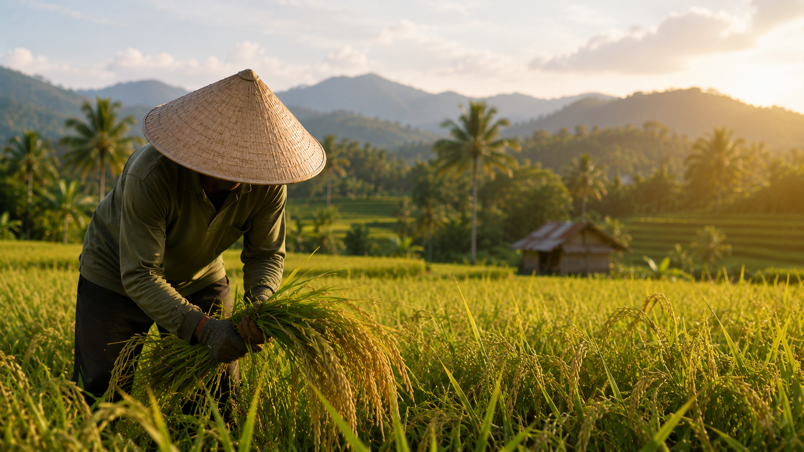
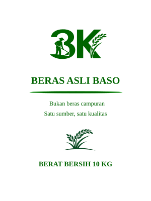
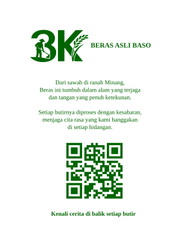

Beras yang berasal dari sumber yang jelas, dipilih dengan standar yang sama, dan dijual dengan kejujuran.
Pesan via WhatsAppBanyak beras di pasaran berasal dari campuran berbagai kualitas. Kami memilih jalan yang berbeda.
Beras 3K berasal dari sumber yang jelas dan diproses dengan standar yang konsisten.
Apa yang kami tulis pada kemasan adalah apa yang Anda terima di rumah.

Beras 3K berawal dari sawah dan kerja keras petani. Kami percaya kualitas terbaik lahir dari proses yang dilakukan dengan sungguh-sungguh sejak masa tanam hingga panen.
Karena itu kami menjaga kejujuran dalam setiap tahap, mulai dari pemilihan gabah hingga beras sampai ke meja makan keluarga Anda.
Kualitas yang dijual sesuai dengan kualitas yang diterima.
Kualitas yang sama dari waktu ke waktu.
Hubungan jangka panjang lebih penting daripada keuntungan sesaat.
Kami memilih fokus pada satu kualitas terbaik agar mutu dapat dijaga secara konsisten.


Mutu yang dijaga sejak awal hingga sampai ke tangan pelanggan.
Standar yang sama pada setiap pembelian.
Kejujuran adalah fondasi utama dalam bisnis kami.
Bagi kami, beras bukan sekadar komoditas. Beras hadir setiap hari di meja makan keluarga Indonesia. Karena itu kami percaya bahwa kualitas dan kejujuran harus selalu berjalan bersama.